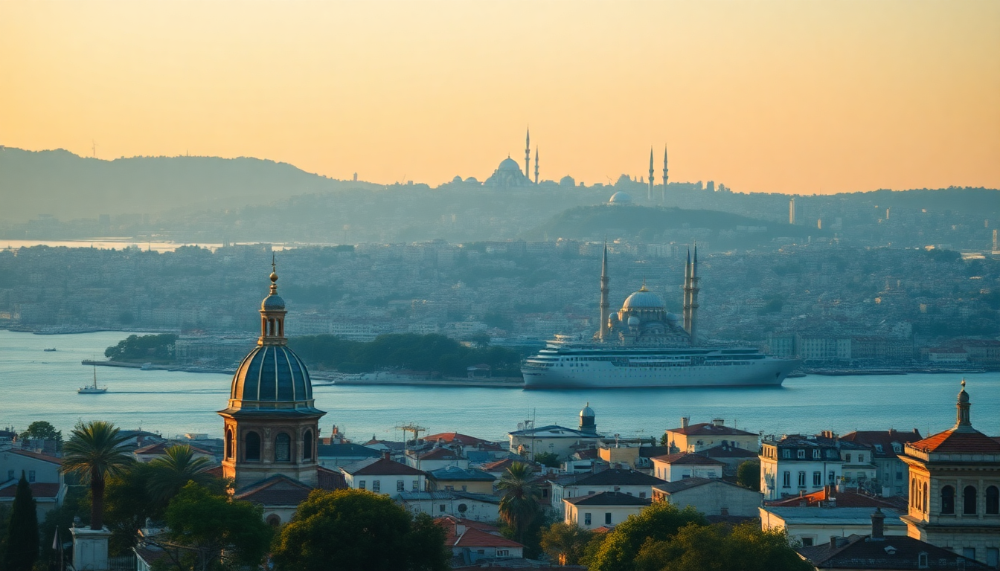

Where to Stay in Istanbul: Best Neighborhoods for Every Budget

Istanbul sprawls across two continents, and picking the wrong base can mean an extra hour on a tram or a taxi ride that costs more than your dinner. After three separate trips—first as a backpacker, then with a mid-range budget, and finally on a splurge anniversary trip—I’ve landed on clear favorites for every price point. Here’s where I’d actually stay, and where I’d skip.
What’s the Best Neighborhood for First-Time Visitors on a Mid-Range Budget?
Sultanahmet is the obvious answer, and for good reason. You’re steps from the Hagia Sophia, Blue Mosque, and Basilica Cistern. But I’ll be honest: it’s tourist-central, and most restaurants here are overpriced and mediocre. Still, if you only have two days, the convenience wins.
I stayed at Hotel Sultanhan—a family-run spot with a rooftop terrace that overlooks the Hagia Sophia. Rooms are small but clean, and breakfast (included) is a proper Turkish spread with simit, olives, and fresh honeycomb. For dinner, skip the main square and walk five minutes to Tarihi Sultanahmet Köftecisi, a no-frills köfte joint that’s been running since 1920. The lamb meatballs and bean salad cost about $8 total.
- Budget stay: Cheers Hostel — dorm beds from €15, location is central, but noise can be an issue.
- Mid-range pick: Hotel Sultanhan — doubles from €80, rooftop view is worth the premium.
- Splurge option: Four Seasons Sultanahmet — it’s a converted prison, but rooms start at €400. Overrated for the price, in my opinion.
Where Should I Stay in Beyoğlu for Nightlife and Food?
Beyoğlu, especially around İstiklal Street and Galata, is where Istanbul actually breathes. It’s loud, chaotic, and full of bars, music venues, and bakeries that stay open past midnight. I based myself here on my second trip and regretted nothing.
I booked a room at The House Hotel Galatasaray—a boutique property tucked off a side street near Çiçek Pasajı. The noise from İstiklal is muffled by double-glazed windows, and the staff pointed me to Mikla for a rooftop dinner (book weeks ahead) and Çukurcuma for vintage shopping the next day. For a quick lunch, Zübeyir Ocakbaşı does grilled meats that rival any steakhouse in London.
- Best for nightlife: Stay near Taksim Square if you want clubs until 5 AM. I found it too rowdy.
- Best for foodies: The side streets off Galata Tower have tiny meyhanes (taverns) serving rakı and meze.
- Watch out: Pickpockets work İstiklal Street hard. Keep your phone in a front pocket.
Is Kadıköy Worth the Ferry Ride on the Asian Side?
Yes—especially if you want to eat like a local and pay half what you would in Sultanahmet. Kadıköy is the Asian side’s cultural hub, and it feels less like a tourist destination and more like a real neighborhood. I spent a full day here just walking the market and eating.
The Kadıköy Market (Çarşı) is a warren of spice stalls, fishmongers, and cheese shops. I grabbed a mid-morning snack at Çiya Sofrası, a restaurant famous for regional Anatolian dishes—try the lamb with apricots and the manti (tiny dumplings) with yogurt. For coffee, Fazıl Bey has been brewing Turkish coffee since 1923. It’s strong, thick, and served with a piece of Turkish delight.
- Budget stay: Hola Hostel — clean dorms from €12, walking distance to the ferry.
- Mid-range pick: DoubleTree by Hilton Moda — doubles from €90, modern rooms with sea views.
- Getting there: The ferry from Eminönü or Karaköy takes 20 minutes and costs about €1. Use an Istanbulkart.
What’s the Best Area for a Luxury Stay with a View?
If you want to wake up to the Bosphorus and not hear a single call to prayer from a loudspeaker, head to Beşiktaş or Ortaköy. These neighborhoods on the European side are quieter than Sultanahmet but still central, with waterfront cafes and palaces within walking distance.
I splurged at The Ritz-Carlton Istanbul in Beşiktaş, and the view from the infinity pool is genuinely ridiculous—you can see the Bosphorus Bridge and the Maiden’s Tower. But the real gem is Ortaköy, a tiny enclave a 10-minute walk north. The Ortaköy Mosque sits right on the water, and the square fills with artists selling paintings and street food vendors grilling corn and chestnuts. For dinner, Mürver does modern Turkish tasting menus with a view—book a window table.
- Luxury pick: The Ritz-Carlton — doubles from €250, best pool in the city.
- Boutique pick: The Stay Bosphorus — six rooms in a 19th-century mansion, from €180.
- Don’t miss: A Bosphorus dinner cruise. I used Tura Tur for a small-group boat with meze and wine—no belly dancers, just good conversation.
Should I Stay in Üsküdar or Balat for a More Local Vibe?
Yes, but with caveats. Üsküdar (Asian side) is deeply residential and has some of the best street food in Istanbul—Kanaat Lokantası serves a lamb shank that falls off the bone for €6. But there’s almost no nightlife, and you’ll rely on ferries or the Marmaray train to get to the main sights. I’d recommend it only if you’re on a return trip or staying a week.
Balat (European side) is the trendy, Instagram-famous neighborhood with colorful houses and vintage shops. I found it charming but overhyped. The cobblestone hills are brutal with luggage, and the cafes are more about aesthetics than substance. One exception: Cuma café does a killer breakfast with menemen and fresh simit.
- Üsküdar pro: Cheap eats and authentic feel.
- Üsküdar con: 30-minute ferry to Sultanahmet.
- Balat pro: Great photo spots and quiet streets.
- Balat con: No metro line nearby; you’ll walk or take a taxi.
What’s the Cheapest Decent Neighborhood for Backpackers?
Fatih, the district surrounding Sultanahmet, is your best bet for rock-bottom prices without feeling unsafe. I stayed at Hush Hostel Lounge near the Grand Bazaar—€10 for a dorm bed with breakfast, and the common room has a fireplace. The neighborhood is chaotic, with stray cats and carpet sellers, but you can walk to the major sights in 15 minutes.
For food, Büyük Şehir Köftecisi does a plate of köfte, rice, and salad for €3. It’s not fancy, but it’s honest. Avoid the restaurants directly on Divan Yolu—they charge triple for the same thing.
- Hostel pick: Hush Hostel Lounge — social vibe, free breakfast.
- Cheap hotel: Hotel Peninsula — private rooms from €35, basic but clean.
- Warning: The area near Aksaray can feel sketchy at night. Stick to the main streets.
FAQ
Is it better to stay on the European or Asian side of Istanbul? For first-time visitors, the European side (Sultanahmet or Beyoğlu) is more convenient because most major sights are there. The Asian side (Kadıköy) is better for food, local culture, and lower prices, but you’ll spend 20–40 minutes on a ferry each way. I’d split my stay: three nights in Sultanahmet, two in Kadıköy.
How many days should I stay in Istanbul to see the main sights? Three full days is enough for the highlights: one day for Sultanahmet (Hagia Sophia, Blue Mosque, Basilica Cistern, Grand Bazaar), one day for Beyoğlu (Galata Tower, İstiklal Street, a Bosphorus cruise), and one day for Kadıköy or a palace (Topkapı or Dolmabahçe). Add a fourth day if you want a more relaxed pace.
What’s the best way to get around Istanbul as a tourist? The Istanbulkart (a rechargeable transit card) works on trams, ferries, buses, and the metro. Buy it at any ticket machine for about €1.50 and top up as needed. The T1 tram line connects Sultanahmet, Eminönü, and Kabataş. Avoid taxis unless you’re in a group—they often refuse the meter and overcharge. Use Uber or BiTaksi for a fixed price.
Conclusion
- Sultanahmet for first-timers who want to walk to the big sights—stay at Hotel Sultanhan.
- Beyoğlu for nightlife, food, and energy—The House Hotel Galatasaray is a solid mid-range pick.
- Kadıköy for the best food and a local feel—don’t miss Çiya Sofrası and the morning ferry ride.
- Beşiktaş/Ortaköy for luxury and Bosphorus views—splurge on The Ritz-Carlton or Mürver dinner.
- Fatih for backpackers on a tight budget—Hush Hostel Lounge works fine.
- Üsküdar and Balat only if you have extra time or a specific interest in residential neighborhoods.